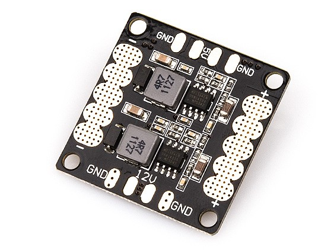
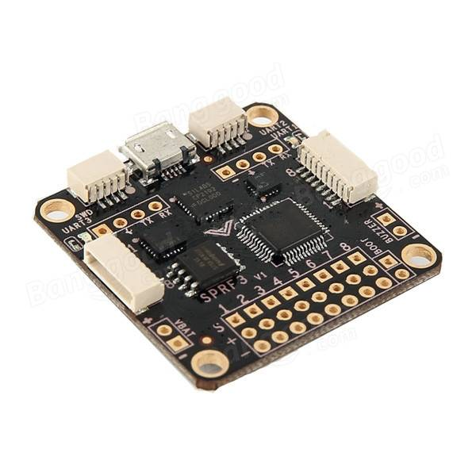
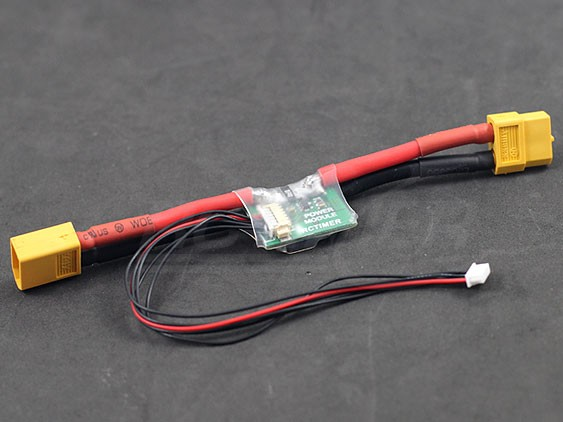

This is a review and hardware guide for the new BeerotorF3 all-in-one (AIO) flight controller from Rctimer.
Before the Beerotor, to get all my stats to display on an OSD, I had to build something like this:
{kind=link}
With the BeerotorF3 (BRF3), the current sensor, dataflash logger, pdb and OSD look like this:
The bottom board shown in the photo above is the companion Beerotor PDB (BRPDB), which carries a shunt resistor current sensor and 28v (6s) compatible MP1593DN voltage regulator.
BRF3 and PDB weigh only 13g, compared to 22g for 3 discrete components: PDB, NAZE32 and MinimOSD. Plus you would need to get a current sensor if you went with the discrete setup.
{kind=link}
You probably know why having an OSD that displays current consumption is so important, but I'll reiterate it anyway. A current sensor measures the exact amount of battery that has been used and the OSD displays this information as text overlaid on your video feed along with other data like RSSI, Voltage, mA in use and total mAh, flight mode and an artificial horizon.
The BRF3 adds a barometer which will give you altitude information as you fly.
Other F1-based AIO boards don't have the processing power to run LuxFloat at 2KHz while consuming all available sensor data, plus GPS. The on-board MinimOSD will display all the data from these sensors.
Pinouts
Top:
{kind=link}
Bottom:

The full manual is here: http://www.rctimer.com/download/BeeRotorF3Manual.pdf
Why choose the BRF3?
You're probably thinking, why should I buy a BeerotorF3 when there are so many flight controllers on the market.
The advantages over a Naze32, SpracingF3 or Oze32 are numerous but the decision when choosing any flight controller boils down to three things:
Flight Performance
Without flight performance, none of the other things matter, so let's look at that first. This section is kinda boring, so if you believe me when I say that F3 is better than F1, just skip to features.
If you're not already, you should be flying BetaFlight. Unlike the name sounds, BetaFlight is actually very stable.
The un-tuned flight performance of BetaFlight is amazing. It also implements many features that may or may not make it into CleanFlight such as filters that will allow 2khz and possibly 8khz loop times, AirMode and a task scheduler.
We'll use that final feature, the task scheduler, to compare performance between a Naze32 (running an STM32F1) and the BRF3 which runs a STM32F3.
The F3 and the F1 run at the same clock speed, 72MHz, but the F3 has a floating point co-processor which allows it to do floating point math off-cpu. This means that it can run the LuxFloat PID controller, which is much more accurate and feels more "locked in" than the normal "Rewrite" PID controller.
Using the status CLI command in BetaFlight, we can ask the task scheduler how busy the CPU is and it will tell us System load. 1 is equal to 100%, so if we're above 1.0, the copter will not arm. It just can't do everything we've asked it to do within the looptime specified.
Here's what my NAZE32 says when I try to run LuxFloat, even after disabling the manometer:
System Uptime: 20 seconds, Voltage: 0 * 0.1V (1S battery - NOT PRESENT), System load: 4.08
CPU Clock=72MHz, GYRO=MPU6050, ACC=MPU6050.n, BARO=MS5611
Cycle Time: 993, I2C Errors: 0, config size: 2020
Notice the load of 4.08, that's means the system load is 408%, which just not going to work...
Here's what the BRF3 says:
System Uptime: 816 seconds, Voltage: 0 * 0.1V (1S battery - NOT PRESENT), System load: 0.07
CPU Clock=72MHz, GYRO=MPU6050, ACC=MPU6050.n, BARO=BMP085
Cycle Time: 1012, I2C Errors: 2, config size: 2060
Wow. 7% load.
In terms of performance, as long as system load is under 90% or so, it really doesn't matter. Once it runs, less load doesn't make it faster. What it does mean though is that 93% of CPU time is available for other processing. With 93% CPU time left, we should have no problem running GPS, MSP, LEDs, etc.
You'll notice from the Beerotor system status that we don't have a magnetometer on the board. Perhaps surprisingly, this is ideal.
Features
Like all F3 boards, we have 3 hardware UARTS.
On the BRF3 they're mapped as follows.
UART1- wired to the onboard OSD's ATMEGA328pUART2- GPS, next to the I2C pinsUART3- Serial RX, wired into the Spektrum Satellite port, also next to RSSI on the SB port.
Magnetometer and GPS
As we can see from the status output in the performance section, you get an IMU and Barometer on the board, but no magnetometer (e.g. compass).
If you've faced issues with a noisy compass, you know it's always better to have a magnetometer you can move away from any magnetic-field-generating current loops (e.g. PDB and motor leads). Even a few inches can make a big difference.
The problem with having a built-in magnetometer goes back to how the I2C bus works. I2C is the protocol used by the magnetometer to talk to the flight controller. I2C expects every device on the bus (a bus is just a bunch of sensors all connected on the same set of wires) to have a unique ID. However, every device does not have a unique ID, the ID is tied to a particular type of sensor. For example, the HMC5883 magnetometer on the NAZE32 has a unique address, but if you attach another HMC5883 to the I2C bus, they both have the same address and neither will work.
For flight controllers that have an on-board compass, the traces to the on board magnetometer can be cut, then plugging in an external magnetometer will work, but with the BRF3, you won't need to do this!
Just get a GPS with a magnetometer, like this NEO-M8N with a compass and plug it in here:
{kind=link}
I2C ports are for the compass
UART2 is for the GPS. Be sure to enable GPS for UART2 in the configurator
MinimOSD
The really exciting part about this board is the on-board MinimOSD. A minim osd is basically two chips: the MAX7456 chip and ATMEGA328p, which you can see on the bottom of the board:
{kind=link}
The MAX chip is in charge of drawing characters onto the video signal and the ATMEGA chip tells the MAX chip what characters to draw.
For this to work, the MAX chip needs the video signal to pass through it, in one pin and out another, so you'll need to wire the SD port in-line with your camera and video transmitter:
{kind=link}
VIDEO_IN is the yellow line from the camera (video signal)
VIDEO_OUT goes to your video transmitter
Back to how the MinimOSD works: the ATMEGA chip decides what to tell the MAX chip to write. The way it does this is by asking the flight controller what is going on. It communicates with the BRF3 in this case, over UART1. It talks the same protocol as the configurator: multiwii serial protocol (MSP).
This is important because it means that on the BRF3 UART1 is wired to the ATMEGA's UART port. Therefore, to talk to the MinimOSD for upgrading and configuration, we need to make sure the BRF3's STM32F3 is turned off and the ATMEGA is turned on. To power just the ATMEGA, connected the provided FTDI cable to your handy UART/USB adapter and use the Scarab OSD configuration tool to configure the MinimOSD.
{kind=link}
The colors in the photo correspond to:
black- groundred- 5vorange- TXyellow- RXgreen- DTR (e.g. reset)
Remember that when connecting UARTs, one TX goes to the other RX, so in this case orange will go to RX on the UART/USB adapter.
Unlike the OZE32, there are no dip-switches, which is a great improvement.
When working with the on-board MinimOSD, remember:
UART1 must have MSP assigned in the configurator to communicate with your computer via USB and with the ATMEGA chip
The board is designed such that when a USB cable is plugged in, the ATMEGA chip will be turned off, so we can communicate with the BRF3's STM32 chip
- The MinimOSD can only be configured or updated when the USB and battery are unplugged
- Connect only the FTDI adapter cable to the
SEport to upgrade or configure the OSD
Powering the board via a battery or any 5v lead will turn both the ATMEGA and STM32, this is "Flight Mode" and the OSD should show data.
Also, there is an open pull request against CleanFlight that makes it possible to configure the MinimOSD by communicating through the STM32: https://github.com/cleanflight/cleanflight/pull/1620. When this feature is finished, we won't need to go through all this to configure the MinimOSD, we'll be able to do it all via the normal USB connection.
DataFlash
The BRF3 has 8MB of flash for blackbox logging. This is way more than the 2MB included on the CC3D and full NAZE32. Flash, by the way, is way faster than an SDCard-based OpenLog device, so you'll never miss a frame of data.
Run this in the configurator CLI to enable it:
feature BLACKBOX
set blackbox_device=SPIFLASH
save
Value
To get a comparable setup, in discrete components, we would need:

|
$7.99 MinimOSD |
|  | $3.99 PDB |
|  | $26.99 SPRACINGF3 |
|  | $10.99 Power Module |
{kind=link}
{kind=link}
{kind=link}
This totals up to $49.96. Plus, you're stuck trying to figure out where to put that giant MinimOSD and the power module with the current sensor. It's so much nicer having it all in one place, ready to go.
At $34.99 for the BRF3 and $5.99 for the BRPDB, the Beerotor setup is $40.98. Not only is it smaller and lighter than buying discrete components, it's cheaper too!
Hardware
The build quality and hardware layout on this board is great.
The USB is on the size, so no need to mess with the board orientation in the configurator.
The baro is on the top of the board, so be sure to cover that with some open cell foam, or mount it upside-down and put a piece of open cell foam between the frame and the baro. Wind passing over the top of the baro can significantly decrease it's accuracy.

Motor outputs
I'm a big fan of the small DF (also called SH) connectors, these are the long white plugs. They save space and are much easier to work with than the 2.54mm JST servo-style pins. Plus it makes stack-mounting multiple 35x35mm boards possible. The connectors on the BRF3 have been upgraded from SH1.0 to SH1.25, meaning the pins are ever so slightly larger and more robust, but the connector size is still tiny. Plus, this is the same pin spacing as the PixHawk, which means you can start re-using cables between some projects!
They even put a boot-button on the board! This is awesome, no more getting out the tweezers every time I want to short the boot pins to upgrade BetaFlight!
{kind=link}
The motor output pins are through-hole vias, ready for some male 2.54mm headers. Motor 1 is on the left, 8 is on the right.
{kind=link}
If you want to use pin headers, grab some right angle 2.54mm pins, my board didn't come with any. I think it will save weight and space to just solder the ESC leads right onto the flight controller, so I'll skip the pin headers. At some point, I hope all the flight controllers standardize to SH1.25 connectors and ESCs ship either without signal wires or with signal wires that terminate in a single female connector that fits into a SH1.25 connector.
You'll also want to wire your ESC signal ground wires to the board.
{kind=link}
Receiver
The Spektrum Satellite port is here:
{kind=link}
S.Bus, SUMD:
Although I don't have an S.Bus RX to confirm this, it looks like an external inverter is not necessary. It should work fine plugged in directly to UART3. Make sure you take either 5v from the same port or 3.3v from the Spektrum port, depending on what voltage your receiver can handle.
{kind=link}
The RSSI analog to digital converter (ADC) is on the SB port as well, along with PPM input.
Note that UART3 RX is on both ports SA an SB. Either port can be used since both these pins are connected to the same wire.
Flashing
Like all F3 chips, make sure you set the manual baud rate to 25600
{kind=link}
Download the latest version of BetaFlight from the github.com release page https://github.com/borisbstyle/betaflight/releases/.
Click the Load local firmware button and pick the SPRF3 hex file.
Click Flash Firmware
If for some reason that doesn't work, flashing via bootloader mode is amazingly easy. Just unplug the BRF3, hold the boot button down while you power it on by plugging it into USB. Choose "no reboot" and hit flash.
Configuration
If you're using the BRPDB, after flashing you'll want to set these options. Paste them in the cli:
set vbat_scale = 110
set current_meter_scale = 380
save
This will calibrate the flight controller to the PDB's voltage and current sensor hardware.
comments powered by Disqus